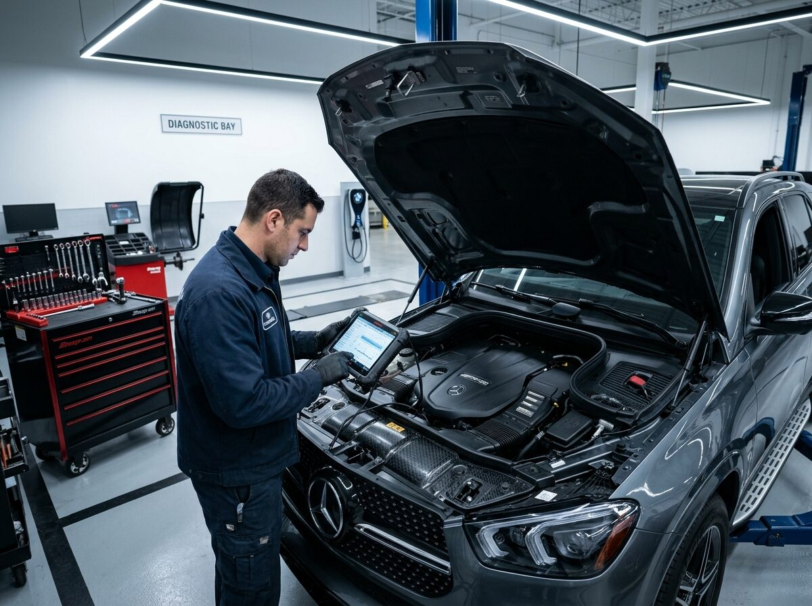

Mantenimiento preventivo claro, diagnóstico técnico y turnos por hora.
Torque Andino es un taller automotriz ficticio creado por AV·STUDIO para demostrar cómo presentar servicios mecánicos con tarifas base en USD y solicitud rápida de revisión.

Mantenimiento y diagnóstico

Diagnóstico ordenado antes de cotizar repuestos
Un taller confiable comunica sus procesos con transparencia: explica qué incluye cada revisión electrónica, cuánto tiempo toma en taller y qué modelo de vehículo atiendes.
- Lectura de códigos OBD-II, batería y sistema de carga con reporte claro.
- Tarifas base en USD visibles por servicio antes de agendar cita.
- Reserva por placa o modelo directo hacia WhatsApp de recepción.
Agenda tu revisión demostrativa
Horario de ejemplo (24h): Lunes a viernes 08:00 – 18:00 · Sábados 08:30 – 13:30.
Sector referencial: Av. España y Chapetones, Cuenca, Ecuador.
Este formulario valida el modelo del vehículo y prepara el mensaje directo hacia el WhatsApp de Anderson Vallejo (AV·STUDIO).